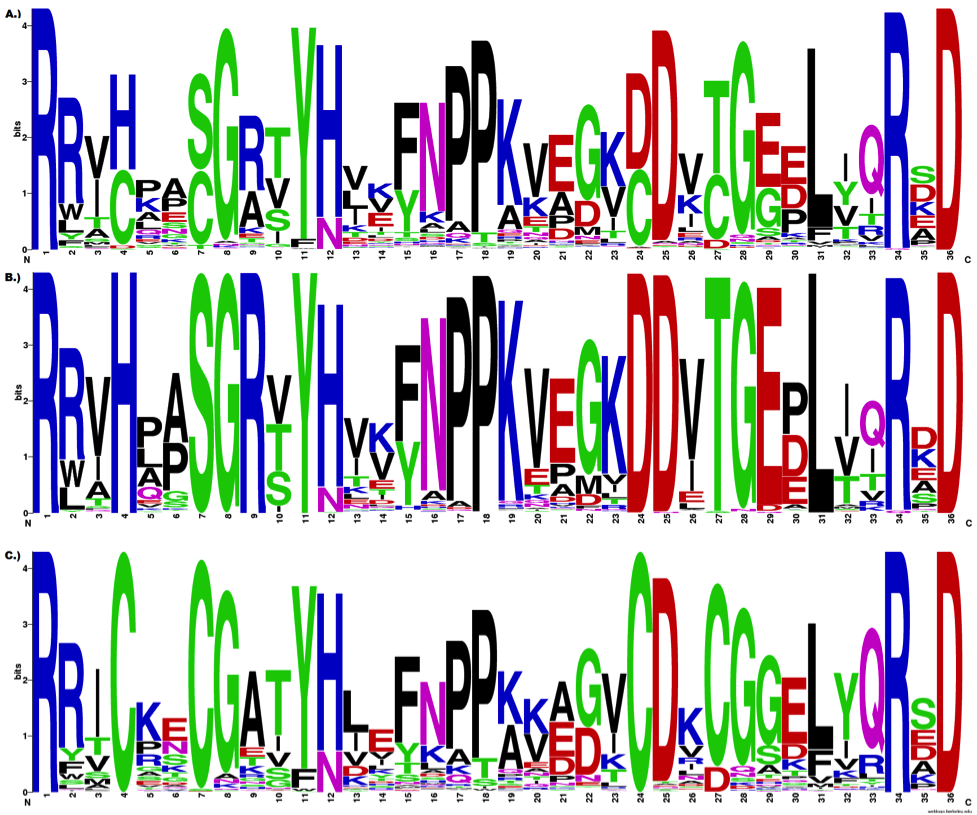

Redesign Contest
Protein Mutation Profiles
The redesign contest recognizes the importance of effective encodings and clear visual communication in display of complex quantitative information. It gives participants the opportunity to develop a practical replacement to the long-standing convention of sequence logos.
The topic of contest is closely related to the BioVis 2013 Data Challenge: Protein Mutations and Their Effect on Protein Function.
Chairs
BC Cancer Research Centre, Canada
martink@bcgsc.ca
Broad Institute, USA
bwong@broadinstitute.org
Contact: redesign@biovis.net
Motivation
Effective data visualization requires a complementary combination of appropriate encoding and effective communication. Once you have created a visual form for the information, the final success of your figure will require that your message is presented logically, that patterns given visual focus, and your narrative and navigational annotations are layered clearly but unobtrusively.
Data must not simply be shown—it must be shown with purpose.
Contest Challenge
Trying to compare protein subfamilies that are the result of different evolutionary solutions to the same problem is a typical challenge. The sequence logo is the de facto method of visually representing the data. As a long-standing convention, it is ineffective at organizing information and revealing patterns—the visualization is very limited in assisting the experts discover what they’re really after. In other words, it does a poor job in matching salience to relevance [1].
The contest figure is a composite sequence logo for all adenylate kinase enzymes and two different sub-families, which have distinctly different requirements for residues
in some of the positions.
Your task will be to improve this figure. Explore new data encodings and presentation schemes.
1. Wong, B. Nat Methods 7, 889 (2011).
The Figure

Sequence logos showing the amino acid usage in the adenylate kinase lid (AKL) domain. (A) Across all organisms. (B) from Gram-negative bacteria. (C) from Gram-positive bacteria.
The ADK lid domain structure is universally conserved, but is stabilized in the Gram-negatives by a hydrogen bonding network between residues 4, 7, 9, 24, 27, and 29 (and several other residues in some organisms), while the Gram-positives are stabilized by a bound metal ion, tetrahedrally coordinated by the Cysteines at 4, 7, 24 and 27. The identities of several other positions (eg 5, 8, 30, 32) are differentially constrained in each subfamily as well, apparently due to steric requirements of the stabilizing residues.
Submission
The submission will be composed of the redesigned figure and legend along with a one page abstract that describes the motivation of the redesign. The abstract should include
- aspects of the figure identified as needing improvement or clarification
- justification of encoding and design choices
- justification of any points of departure from the original
You are free to leave things out in the redesign, if you feel they are superfluous. Exercise discretion when adding elements to the figure—the original spirit should be intact without adding complexity.
You are free to rewrite the legend, but the new version must include all relevant information. Parts of the original legend draw attention to existing features in the data that are important, but difficult to identify in the figure. For example, at position 8 glycine is absolutely conserved in the Gram-negatives, while only strongly in the Gram-positives. This slight difference in preference is only a symptom of a more fundamental difference between the families at this, and other columns (mutual information).
The submitted figure size and format must match NPG requirements.
Please include the names and affiliations of all submission authors and contact information for the corresponding author.
Deadline
2 August 2013
Judging
The judges will be be looking for a redesign that enhances the narrative and makes good use of visual emphasis. The winning participant will have the opportunity to present their redesign in a session during the symposium. All entries will be made available to the participants.
Focus, clarity and simplicity will be favored over extravagance.
Terms and Conditions
Given that the nature of this contest is subjective, the judges will provide a short description of the reasoning behind the scoring for each submission. All judges’ decisions are final.
By submitting an entry, you give the VIS 2013 and BioVis 2013 organizers permission to publish it in conference-related materials (web site, proceedings, companion papers marketing). Any usage or reference to any submission will include full credit to its authors.
Download
The contest package includes the figure, legend, data and instructions.